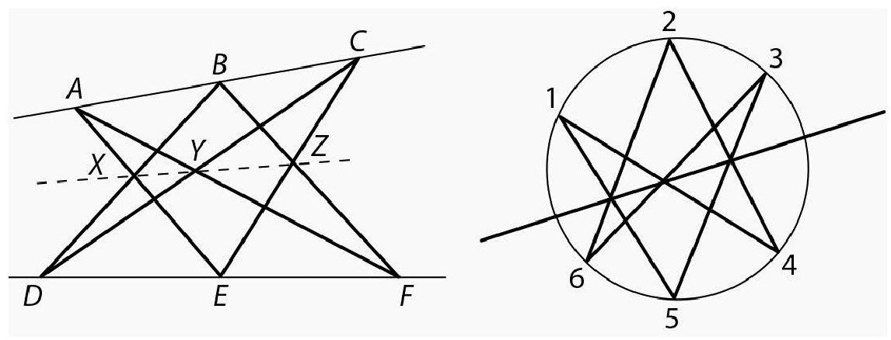
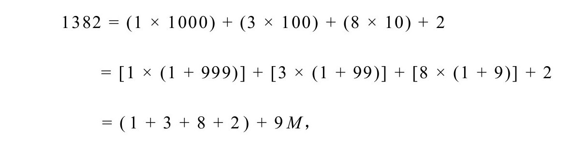
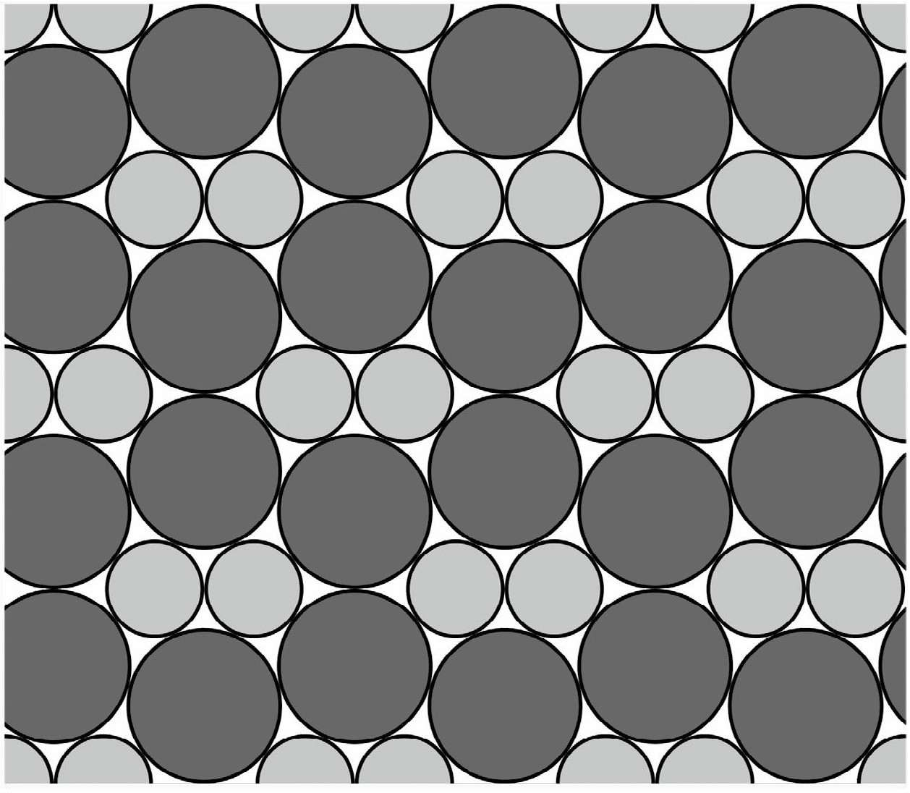
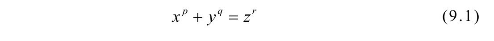
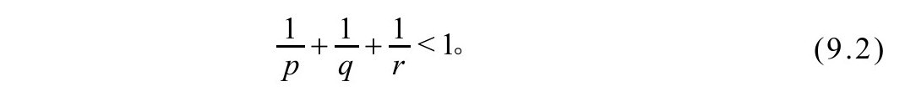
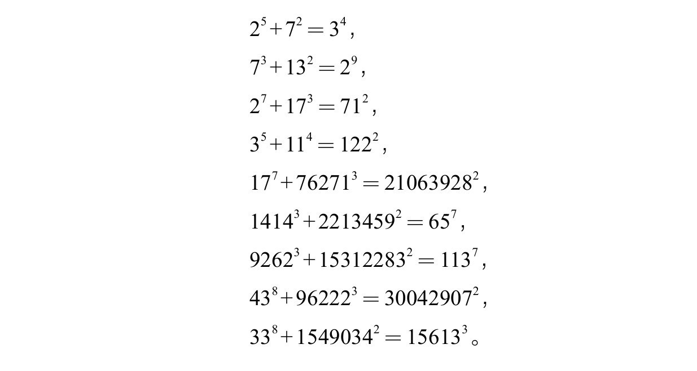
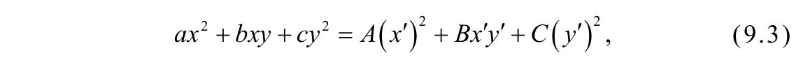
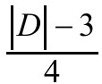
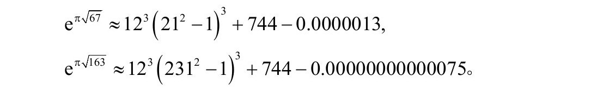
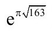

——丹尼尔·塔曼特，《生于蔚蓝的日子》
——丹尼尔·塔曼特，《生于蔚蓝的日子》
这本书的最后一个整数—9—又联系到了我们之前遇到的几个主题，包括素数、堆叠和幂数。黑格纳数可能会用它们惊人的关联将你推得更远，但你不需要是有9条命的猫才能在这些让人眩晕的数学中生存和成长。
九个点和共线性
有两个定理都是从6个点开始，生成3个新点并使得它们共线。其中较老的一个是帕普斯定理。假设有两条直线，线上各有3个点，构造6条连接线，在相交的地方会得到3个“中间”点。这个定理断言这3个新的点共线（图9.1）。
另一个结果是帕斯卡定理，它还有一个很大的名头叫做六角迷魂图定理。假设有一个六边形内接于椭圆截面。分成两边，一边3个点，两边相互错开连线，产生3个交点。这个定理断言这3个点也共线（图9.1）。帕斯卡定理推广了帕普斯定理，因为可以让椭圆不断变大同时让这些点大致保留在原来的位置上。当椭圆变得无穷大时，位于椭圆上的两组3个点变得共线。

图9.1 帕普斯定理（左）和帕斯卡定理（右）
帕斯卡定理本身又是一个更广义、更彻底的结果的特例。这个定理涉及三次曲线，也就是可以用三次多项式描述的曲线。在17世纪微积分诞生的前夜，这类曲线得到了深入研究。其中一些曲线的名字很有特色，例如，德·斯路斯蚌线、笛卡儿叶形线以及阿涅西箕舌线。这个更广义的结果是凯莱—巴哈拉赫定理。设A和B是相交于9个点的两条三次曲线，如果C是三次曲线，并且通过其中8个点，则也必然通过第9个点。
这些定理展示了推动数学发展的另一种力量：一般化。其中的思想是有时候一些数学事实只不过是更具一般性的原理的特例。这个一般性结果之所以成立是因为某种更深刻的数学。寻求真理的步伐不能停下。
弃九法
在文本和消息中检查错误的传统可以追溯到数千年前。早期的一次成功是复制圣经的部分。犹太抄写员计算了一些量，比如每行的单词数和字符数，以及每页的字符数。将抄本与原本的计数进行比较可以相对高效地在一定程度上确保抄本的准确性。一个错误就足以让辛苦抄写的一页作废。20世纪中叶发现的死海古卷的准确性印证了这种细致检查的有效性。
除了检查文本，判断数值计算的准确性也受到了注意。“计算机”（computer）这个英文单词在以前指的是人而不是机器，这个问题的重要性可想而知。有没有简单的方法可以判断计算的准确性呢？这种检测有时候被称为完好性检查。我们来看看弃九法。
弃九法至少可以追溯到千年前。我们来看一个简单的例子。假设有人说1382×2596=3587672，对涉及的每个数字，我们将数字相加。如果和大于9，就再将数字相加，不断反复直到只留下一个数字。因此将1382的数字相加，得到14，再次将这些数字相加得到5。类似地，2596变换成22然后又变成4。最后，3587672变换成38，然后是11，最后变成2。现在可以检查了，5和4——分别是1382和2596留下的数——的乘积是20，20变成2，与3587672的变化结果一致。
必须说的是这个检查并不保证原来的结果是正确的，它只是说乘积可能是对的。如果我们算出来错误的乘积3542672，变换结果也是2。这个测试最适合用来发现错误，当然仍然会有漏网的情况。弃九法的优点是只需要少数简单的加法，计算量比重新再乘一遍要少得多。
这个方法的原理是什么呢？9又在哪里？如果ab=c，则对于任何整数r，有
当r=9，这个式子坍缩得很快。例如

其中整数M的值无关紧要。通过舍弃掉9，我们留下了1+3+8+2=14。从14舍弃掉9留下5。由于10的任意次幂都会缩减成1，因此只需要将数字相加就可以了。
素数和九
我们已经看到还有许多与素数有关的问题没有解决。在解决这些问题的尝试中，许多使用现代方法的部分进展都将这些猜想联系到了整数9。
奇完全数
我们在第2章看到还没有发现奇完全数，也就是除数之和等于这个数的两倍。如果存在奇完全数，则至少超过101500并且至少有75个素因数。就这里来说，更有趣的是，已经证明这些素因数中至少有9个是不一样的。
孪生素数
虽然最近孪生素数猜想的证明取得了重大进展，但还是不清楚这个方法能不能给出完整的解答。布朗定理——所有孪生素数的倒数之和是有限值——是这个研究领域中一个迷人的结果。布朗还有一个关于这个谜题的更鲜为人知的结果：存在无穷多个n，使得n和n+2各有至多9个素因数。
让素数相互接近
在第2章，我们遇到了柏特龙-切比雪夫定理：对任意整数n≥2，在n和2n之间至少存在一个素数。一些实验表明对于很大的n，在这个区间里存在很多素数。一个更强的结果认为，如果x＞π，则在x3和（x+1）3之间至少存在9个素数。注意到当x很大时，（x+1）3/x3≈1，与柏特龙-切比雪夫定理中的比率（2n）/n=2相反。对于这个更强的结果只有一个附加说明：它的证明需要黎曼猜想成立，这是千禧年大奖难题中最著名的问题。
十五定理
在第4章我们看到，拉格朗日四平方定理断言所有正整数n都可以写成4个平方数之和，即n=a2+b2+c2+d2，其中a、b、c和d是整数。表达式的右边是二次型的一个例子，也可以写成vTMv，其中vT是行向量（a,b，c,d），M是单位矩阵，
这个二次型具有正定性，因为当且仅当a=b=c=d=0时它才等于0，否则就为正。
在对拉格朗日的结果的一次一般化尝试中，1993年康威和施尼博格证明了十五定理：如果正定二次型对应的矩阵每一项都是整数，并且二次型自身能得到从1到15的所有值，则该二次型就能得到所有正整数（我们说这个二次型是普适的）。这个定理的一个更紧凑的版本断言，如果能得到9个值，1、2、3、5、6、7、10、14和15，则二次型就是普适的。这个定理很硬——列出的9个数一个都不能拿掉——因为可以构造出除了列出的某个数之外所有正整数的二次型。例如，二次型
a2+2b2+5c2+5d2，
它的矩阵表示是
可以表示除15以外的所有正整数。
康威和施尼博格的证明很复杂，从未正式发表。2000年，曼朱尔·巴伽瓦发现了一个简单证明，并且列出了所有可能的普适二次型（204种）。事实上，巴伽瓦和乔纳森·汉克还发现了一个有趣的相关结果。假设把条件放宽一点，不要求矩阵的项为整数，只要求二次型是整数值，也就是二次型的系数是整数。这个条件更宽一些，因为x2+xy+y2是正定二次型，但对应的矩阵是
这个新的结果断言，如果整数值二次型能得到29个值，1、2、3、5、6、7、10、13、14、15、17、19、21、22、23、26、29、30、31、34、35、37、42、58、93、110、145、203和290，就具有普适性。这个结果有时候也称为290定理。
两种尺寸的圆堆叠
一家西红柿产品的制造商希望能降低运输成本。采购罐装西红柿的商家大部分也会同时采购番茄酱罐头，而番茄酱罐头的半径要小一些。如果按第6章介绍的六边形网格的方法将两种产品分别装送，则罐子密度——整个空间中被利用的空间——大约为0.9069。不过如果将不同大小的罐头一起装送，则能够实现更高的密度。结果刚好有9种圆堆叠方法可以将两种不同尺寸的圆堆紧（没有圆能晃动）。图9.2是最简单的堆法。

图9.2 两种不同尺寸的圆的一种紧堆叠法
卡塔兰猜想
在自然数的群星中，完全幂特别闪耀，因为在所有数学领域都会用到它们。从最初的几个——1、4、8、9、16、25、27、32和36——不容易看出相继的间隔会有多大或多小。如果用an表示第n个完全幂，哥德巴赫证明的一个漂亮公式表明这些数遵循公式：
最近，又证明了
1844年，尤金·卡塔兰猜想9是唯一与另一个完全幂刚好相差1的完全幂，也就是说，32-23=1。以2和3为底的特殊情形已经在1343年被吉尔松尼德证明。20世纪70年代，利用数论中的高级工具证明了，如果还有其他解，则底不会超过一个很大的数B=exp（exp（exp（exp（730）））），这个数的大小已经超出了人类的理解范围（exp（730）已经远远超出了宇宙中估计的原子数量：1080；B的规模太惊人）。虽然是有限，但在实践意义上却是无穷大，因为到目前为止还没有计算机能检验这个数。2002年，当普雷达·米哈伊列斯库给出卡塔兰猜想的证明时，整个数学界都惊呆了。
一个有趣的续集将费马大定理和卡特兰猜想结合到了一起，被毫无想象力地命名为费马—卡特兰猜想。它说的是方程

只有有限组整数解，其中底数x、y和z都大于1，指数则满足

法尔廷斯定理指出对于满足不等式（9.2）的任意单一指数选择，方程（9.1）都只有有限组解。费马—卡特兰猜想则说对于所有可能的指数选择，解的总数仍然是有限的，这个的难度似乎要大得多。目前还只知道9种解：

注意到这9种解都有一个指数为2。这引出了比尔猜想：如果存在方程（9.1）的解并且p,q，r＞2，则x,y，z必定有公因数。安德鲁·比尔是达拉斯的一位对数论感兴趣的富有的银行家，他在1997年为他的问题提供了5000美元的奖金，他还承诺奖金每年会增加5000美元，50000美元封顶。后来他又把奖金提高到了100000美元，2013年，这位亿万富翁把奖金提高到了1000000美元。
黑格纳数
有没有简单的公式可以只生成素数？这是早期的素数爱好者的梦想。欧拉有一个非凡的发现：多项式x2−x+41在x=1，2，……，40时都是素数。除了41，还有一些n也具有在x=1，2，……，n−1时x2−x+n是素数的性质：分别是n=2，3，5，11和17。还有其他n也具有这个性质吗？还是41是最大的？这个问题的历史很有趣，与一个明显不同的主题有关。
我们已经见过了费马平方和定理，它关注的是可以写成形为n=x2+y2的数n。更一般地，我们可以关注二次型ax2+bxy+cy2生成的数。现在来变代数魔术，如果数s、t、u和v满足sv−tu=1，则用以下方程构造新的数x′和y′：
通过展开可以证明

其中
式（9.3）表明系数为（a,b，c）和（A,B，C）的两个二次型表示了相同的整数集。我们说这两个二次型是等价的。
再变一点代数魔术就会揭示出这两个等价的二次型具有相同的判别式：D=b2−4ac=B2−4AC＜0。这使得研究者们——拉格朗日和高斯在其中都扮演了重要角色——将D的类数定义为判别式b2−4ac等于D的不等价二次型ax2+bxy+cy2的数量。当然尤其让人感兴趣的是有多少D值具有类数1。
对类数的研究一直进展缓慢，20世纪30年代证明了对于给定的类数只有有限数量的判别式，并且至多有10个D值的类数为1：
−3，−4，−7，−8，−11，−19，−43，−67，−163，
最多再加一个其他值。50年代，高中数学教师库尔特·黑格纳声称他证明了假想的第10个数并不存在。他的论文有一些错误，但不幸的是，他在自己的成果被正确认识之前就去世了。1967年，哈罗德·史塔克用与黑格纳类似的方法给出的证明被认可。值得一提的是，在前一年，阿兰·贝克用完全不同的方法证明了这个结论。不过，类数为1的这9个数还是被称为黑格纳数。
类数问题又是如何与素数序列相关联的呢？拉比诺维奇在1912年第5届国际数学家大会上给出的一个定理将两者关联了起来。如果D＜0且D≡1（mod4），则当且仅当D的类数为1时，
在x=1，2，……，

时为素数。黑格纳数−163证明（1+163）/4=41是最大的生成欧拉那样的素数序列的数。黑格纳数还和数论的其他部分有深刻的关联。下面是一些让人瞠目结舌的近似：

埃尔米特在1859年就发现了

的这个近似。1975年，马丁·加德纳开了一个愚人节玩笑，说这个数是整数并且已经被拉马努金证明，从此这个数就被称为拉马努金常数。